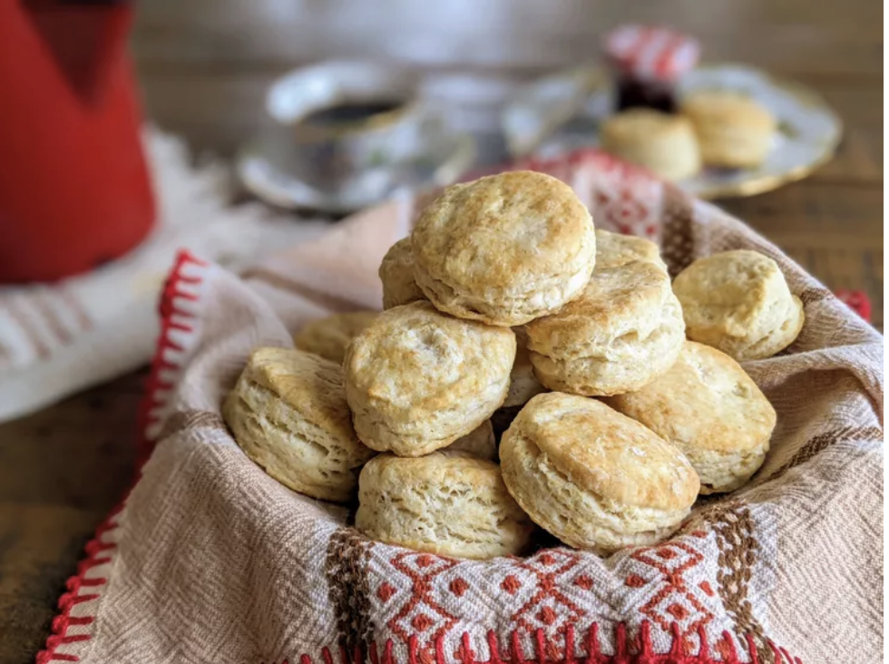

Basic Biscuits

Ingredients
- All purpose flour -- 2 cups
- Baking powder -- 1 tablespoon
- Shortening -- 1/2 cup
- Salt -- 1/2 teaspoon
- Cold milk -- 3/4 cups
Steps
- Preheat the oven to 450 degrees F (230 degrees C)
- In a large mixing bowl sift together flour, baking powder and salt. Cut in shortening with fork or pastry blender until mixture resembles coarse crumbs.
- Pour milk into flour mixture while stirring with a fork. Mix in milk until dough is soft, moist and pulls away from the side of the bowl.
- Turn dough out onto a lightly floured surface and knead dough briefly, 5 to 7 times.
- Roll dough out into a 1/2 inch thick sheet and cut out biscuits with a floured cookie cutter. Press together unused dough and repeat rolling and cutting procedure.
- Place biscuits on ungreased baking sheets and bake in preheated oven until golden brown, about 10 minutes.
- Enjoy!